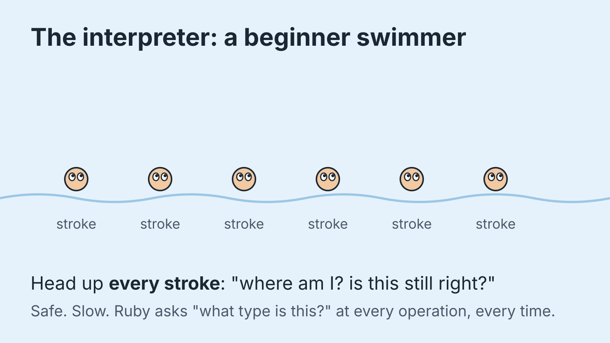
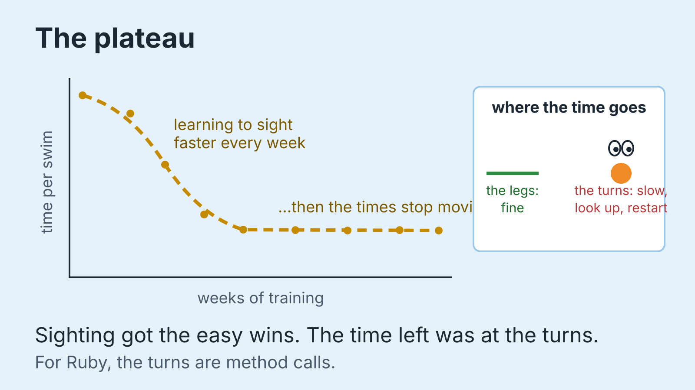
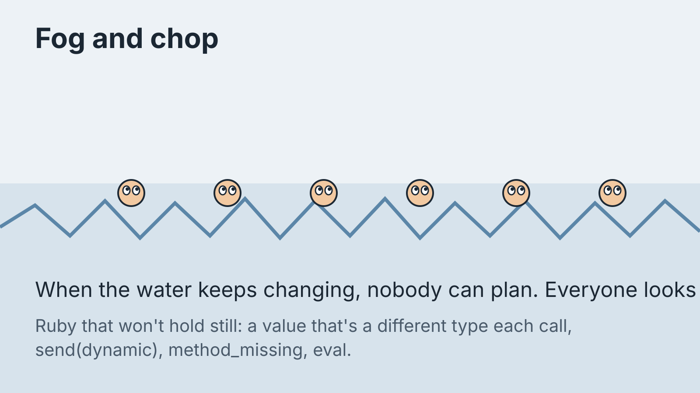

The Ceiling: Why Ruby 4.0 Needed a Second Compiler
Dhruva Sagar · RubyConf 2026
Ruby 4.0 ships two JIT compilers. Why build the second one?
Every time you lift your head
"Every time you lift your head, you slow down."
Ruby 4.0 ships two just-in-time compilers. Why build the second one?
Ruby swims with its head up

Our five lines
class Point
attr_reader :x, :y
def initialize(x, y) = (@x, @y = x, y)
end
def distance(a, b)
dx = a.x - b.x
dy = a.y - b.y
Math.sqrt(dx * dx + dy * dy)
end
The bytecode
ruby -r ./distance -e 'puts RubyVM::InstructionSequence.of(method(:distance)).disasm'
0000 getlocal_WC_0 a@0 0002 opt_send_without_block <calldata!mid:x, argc:0, ARGS_SIMPLE> 0004 getlocal_WC_0 b@1 0006 opt_send_without_block <calldata!mid:x, argc:0, ARGS_SIMPLE> 0008 opt_minus <calldata!mid:-, argc:1, ARGS_SIMPLE> 0010 setlocal_WC_0 dx@2 ... 0040 opt_send_without_block <calldata!mid:sqrt, argc:1, ARGS_SIMPLE> 0042 leave
Ruby 4.1.0-preview1
Learning to sight

YJIT: buoy to buoy

YJIT, in its own words
# Block: distance@distance.rb:7 # Insn: 0002 opt_send_without_block (stack_size: 1) # call to Point#x # guard not immediate # guard known class # guard shape # Block: distance@distance.rb:7 # Insn: 0004 getlocal_WC_0 (stack_size: 1) # defer_compilation ... # Insn: 0008 opt_minus (stack_size: 2) # guard arg0 fixnum # guard arg1 fixnum
Each Block is a leg. Each guard is a sight. defer_compilation is the next buoy: "decide when I get there".
Ruby 4.1.0-preview1 · ruby --yjit --yjit-dump-disasm
The plateau

ZJIT: study the course

ZJIT: the IR on one slide
fn distance@distance.rb:7: bb3(v15:BasicObject, v16:BasicObject, v17:BasicObject): v79:ObjectSubclass[class_exact:Point] = GuardType v16 v82:CShape[0x10007a] = GuardBitEquals v81, CShape(0x10007a) recompile v83:BasicObject = LoadField v79, :@x ... v93:Fixnum = GuardType v83, Fixnum recompile v94:Fixnum = GuardType v90, Fixnum v95:Fixnum = FixnumSub v93, v94 ... v118:Fixnum = FixnumMult v95, v95 ... v130:BasicObject = CCallWithFrame v54, :Math.sqrt, v126 Return v130
The whole method, planned at once. GuardType and GuardBitEquals are sights. v95 is dx: proved a number once, then used with no more type checks.
Ruby 4.1.0-preview1 · ruby --zjit --zjit-dump-hir
25 compiles, or one
YJIT ZJIT call 30 call 30 distance@distance_log.rb:7 (index: 0) distance@distance_log.rb:7 distance@distance_log.rb:7 (index: 2) ... distance@distance_log.rb:10 (index: 42)
Default settings, 40 calls. Both start at call 30. YJIT: 25 small compiles, leg by leg. ZJIT: 1.
Ruby 4.1.0-preview1 · --yjit-log / --zjit-log-compiled-iseqs
One more call
def sq(n) = n * n
def distance(a, b)
dx = a.x - b.x
dy = a.y - b.y
Math.sqrt(sq(dx) + sq(dy))
end
One more call is one more buoy

At the turn buoy
YJIT ZJIT # call to Object#sq v95:Fixnum = FixnumSub v93, v94 # push callee control frame ... # gen_direct_jmp: existing block PushInlineFrame :sq, v116, num_args=1 ... v169:Fixnum = FixnumMult v95, v95 # Block: sq@distance_sq.rb:6 PopInlineFrame # Insn: 0004 opt_mult (stack_size: 2) # guard arg0 fixnum # guard arg1 fixnum # pop stack frame
YJIT: a real call into a general sq, which checks n again. ZJIT: a sq built for this spot, v95 reused, no call, no check.
Ruby 4.1.0-preview1 · default settings
The 2-beat kick

In the ZJIT team's words
"we want to both raise the performance ceiling (bigger compilation unit size and SSA IR) and encourage more outside contribution (by becoming a more traditional method compiler)." — Max Bernstein, ZJIT team, Rails at Scale, 2025-12-24
Race day: a method you already run
def [](key) super(convert_key(key)) end def convert_key(key) Symbol === key ? key.name : key end
Top-20 calls to C functions from JIT code (99.3% of total 310,500): Hash#[]: 199,971 (64.4%)
HashWithIndifferentAccess, what Rails params is built on. The thing its compiled code calls most is Hash#[], written in C.
activesupport 8.1.4.1 · Ruby 4.1.0-preview1
The feed stop

Fog and chop

Calm water, choppy water
def double(x) = x + x
Calm: only Integers in the warm-up lap. Spliced in: one sight, one add.
PushInlineFrame :double, v23, num_args=1 v44:Fixnum = GuardType v10, Fixnum recompile v46:Fixnum = FixnumAdd v44, v44 PopInlineFrame
Choppy: five types. Five checks, five calls into C, then a general fallback.
PushInlineFrame :double, v23, num_args=1 CondBranchHasType v10, ArrayExact, bb8(), bb9() v72:BasicObject = CCallWithFrame v37, :Array#+, v10 ... CondBranchHasType v10, Fixnum, bb12(), bb13() v79:BasicObject = CCallWithFrame v47, :Integer#+, v10 ... Send v10, :+, v10 # SendFallbackReason: Send: polymorphic fallback
Ruby 4.1.0-preview1 · default settings · ruby --zjit --zjit-dump-hir
What it means for Ruby
YJIT compiles Ruby a bit at a time, deciding as it goes; ZJIT plans a whole method at once, so it can see through small method calls and stop paying for them. That's the room Ruby needed to keep getting faster.
ruby -r ./your_file -e 'puts RubyVM::InstructionSequence.of(method(:m)).disasm'
ruby --zjit --zjit-dump-hir your_file.rb
ruby --zjit --zjit-stats your_file.rb
Head down
"Every time you lift your head, you slow down."
Next time someone says "Ruby is slow", ask: which part?
Slides, code, every capture, the full write-up: [REPO-URL]